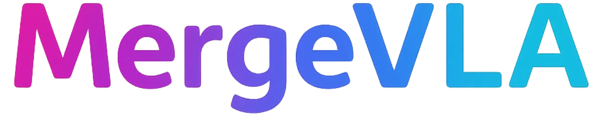
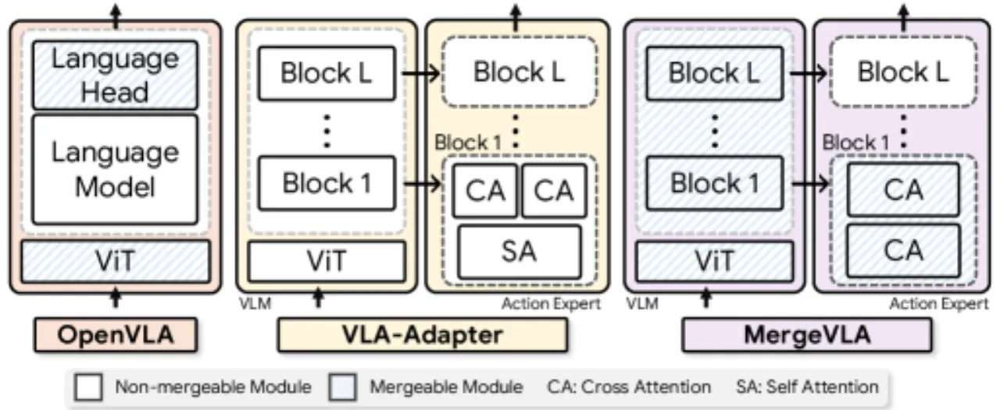
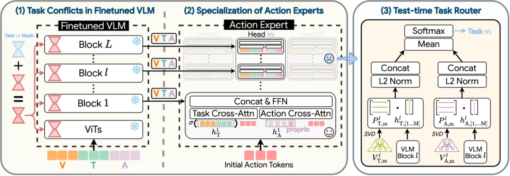
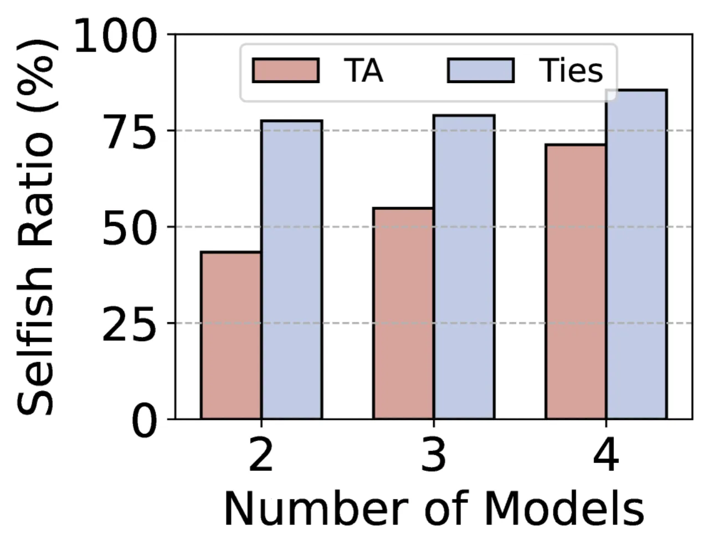
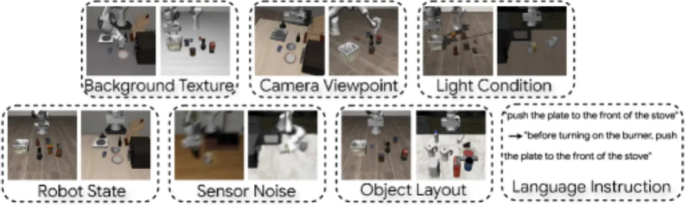
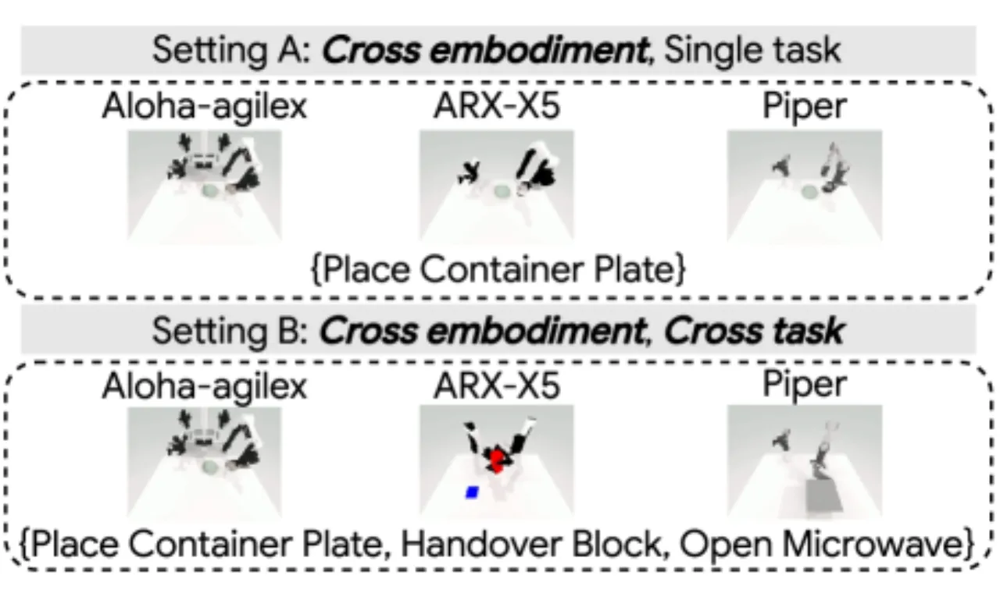

将多个技能专用的 VLA 专家合并为单一通才模型长期以来面临近零成功率的困境。 MergeVLA 通过稀疏任务掩码激活 LoRA 参数，并将 action expert 重新设计为纯 cross-attention 结构， 首次实现了跨技能 VLA 专家的高质量合并——合并后模型在 LIBERO 基准上达到 90.2% 平均成功率， 与单独微调的专家（96.7%）仅差 6.5%，且在真实机器人上同样达到 90% 成功率。
当前 VLA（Vision-Language-Action）模型通常针对单一任务或单一机器人形态进行微调，难以扩展至多技能通才场景。 模型合并（model merging）是一种无需重新训练即可整合多个专家知识的技术， 但直接将多个 VLA 专家合并会导致几乎为零的成功率，根本原因在于两类不可合并性。
"directly merging VLA experts trained on different tasks results in near-zero success rates."

不同任务的 LoRA 微调更新激活了几乎互不相交的参数子集。 分析显示，超过 75% 的参数是"自私的"（selfish）——仅与一个任务相关， 直接合并时这些参数会互相干扰，导致性能崩溃。
传统 VLA-Adapter 中 action expert 含有 self-attention 层， 训练过程中不同任务的 self-attention 会在各层之间积累任务特定的依赖关系（inter-block dependencies）， 导致合并后信息混乱、难以区分任务。
MergeVLA 由三个核心组件构成：（1）稀疏任务掩码用于 VLM 部分的无干扰合并， （2）重新设计的 action expert消除跨块依赖， （3）测试时任务路由器在无监督条件下实时识别当前任务并激活对应掩码。


对于 VLM 部分，MergeVLA 在 TIES 或 WUDI 等基础合并算法之上引入二值任务掩码（binary task mask）。 对每个任务 m，掩码构造方式为：
Sm = I[|τm| > λ|τmerge − τm|]
即仅保留任务特定更新显著且与整体合并向量对齐的参数（由超参数 λ 控制掩码比率）。 推理时，对应任务的掩码被激活，从而屏蔽其他任务的参数干扰。
针对 action expert 的不可合并性，MergeVLA 做出两处关键架构修改：
对于跨任务差异较大的场景（如跨形态），最后 1–2 个 action expert 块（记为 H(L-1→L) 或 H(L-2→L)）保持未合并，以保留任务特异性。
该路由器无需训练，仅利用初始观测帧进行任务识别：
消融实验表明，使用 value（V）投影子空间的路由效果（LIBERO 平均 89.7%）显著优于 key（K）投影（53.6%），选择 V 是最终设计。

实验覆盖三个基准：LIBERO（四套仿真任务组）、LIBERO-Plus（七类分布外扰动测试）、 RoboTwin（跨形态跨任务）及真实 SO-101 机械臂。 基线包括 OpenVLA、π0、VLA-Adapter 等。
| 方法 | Spatial | Object | Goal | Long | 平均 |
|---|---|---|---|---|---|
| OpenVLA（单任务） | 84.7% | 88.4% | 79.2% | 53.7% | 76.5% |
| VLA-Adapter（单任务） | 99.6% | 99.6% | 98.2% | 96.4% | 98.5% |
| MergeVLA（单任务，合并前参考） | 98.0% | 98.6% | 95.0% | 95.0% | 96.7% |
| VLA-Adapter + TA（合并后） | 0% | 0% | 0% | 0% | 0% |
| MergeVLA TIES（合并后） | 94.8% | 94.6% | 91.8% | 79.4% | 90.2% |
| MergeVLA WUDI（合并后） | 97.6% | 98.2% | 85.6% | 78.2% | 89.9% |
| 方法 | LIBERO-Plus 平均成功率 |
|---|---|
| OpenVLA | 16.3% |
| π0 | 56.3% |
| VLA-Adapter | 59.0% |
| MergeVLA（合并后） | 62.5% |
在颜色变化、光照变化、视角偏移、指令改写等七类分布外扰动下，MergeVLA 全面超越所有基线，展示出优异的泛化能力。

| 设置 | 单任务基线 | MergeVLA（合并后） |
|---|---|---|
| Setting A（相同任务，不同形态） | 88.0% | 88.7%（HL-1→L 未合并） |
| Setting B（不同任务，不同形态） | 76.0% | 70.7%（HL-2→L 未合并） |
Setting A 中合并模型（88.7%）已超越单任务基线（88.0%）；Setting B 中跨任务跨形态的组合挑战导致性能有所下降，但仍验证了跨形态泛化能力。

| 任务 | MergeVLA TIES 成功率 |
|---|---|
| Pick & Place（含颜色分布外测试） | 90.0% |
| Push Cube | 90.0% |
| Stack Cube | 90.0% |
| 平均 | 90.0% |
掩码比率 λ 的影响：λ 过小（如 0.2）导致几乎 0% 成功率，λ 在 [0.6, 0.9] 区间时性能稳定在 70% 以上，表明方法对该超参数有一定鲁棒性。
路由子空间选择：仅用 K 投影子空间路由时 LIBERO 平均 53.6%，K+V 组合为 65.1%，仅用 V 达到最优 89.7%。
Expert head 深度：跨任务合并时保留最后 1 个块（HL-1→L）足以应对同形态场景，跨形态时则需保留最后 2 个块（HL-2→L）。
MergeVLA 需要为每个任务维护一套独立的二值任务掩码和未合并的 expert head 块。 随任务数 M 增加，存储的掩码和 head 数量线性增长，对大规模多任务场景的可扩展性构成限制。
在 RoboTwin Setting B（不同任务 + 不同机器人形态）中，MergeVLA 合并后的平均成功率（70.7%）低于单任务基线（76.0%）。 论文指出此设置需保留更多层（HL-2→L）未合并，降低了模型压缩收益。 对于需要双臂协调的 handover 类任务，跨任务跨形态的挑战尤为突出。
主要实验基于 Qwen2.5-0.5B 的小型 VLM 骨干网络，对更大规模 VLM 骨干（如 7B+）的扩展性尚未验证。 更大规模模型的 selfish 参数分布和 action expert 合并特性可能有所不同。
测试时任务路由器通过 V projection 的 SVD 主成分子空间区分任务， 当任务在视觉观测上高度相似（如同一物体的不同操作）时，子空间区分度可能下降，影响路由准确率。